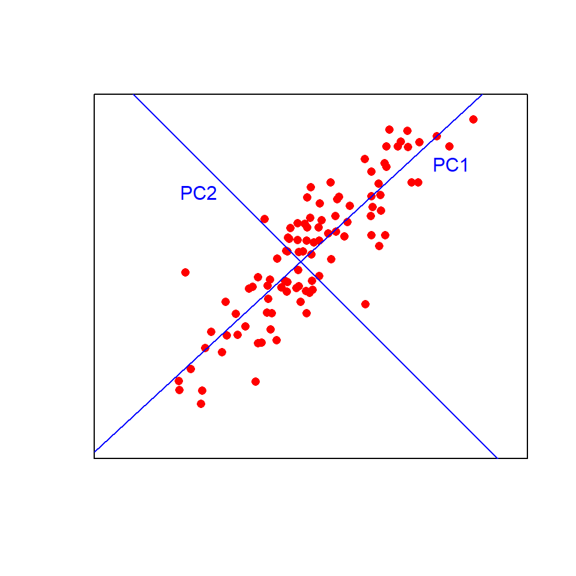
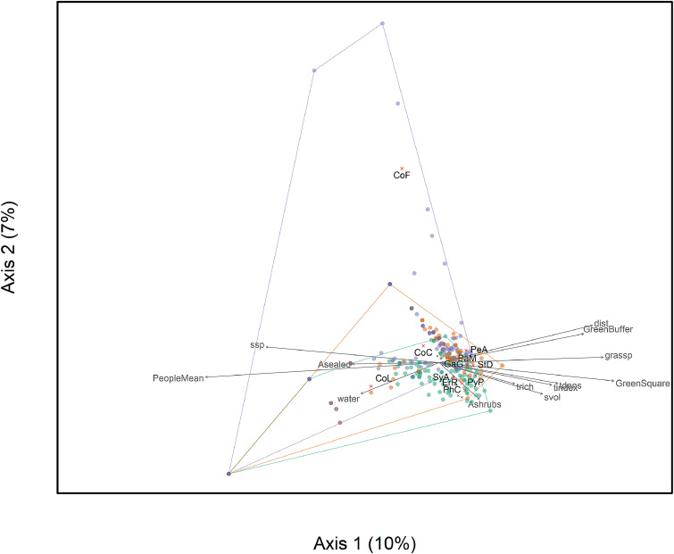

multivariate methods
1 PCA
Principal Components Analysis (PCA) is used when there is a large number of continuous variables that define the samples. It makes the large number of variables into a smaller number of derived variables. For example, PCA might be used to:
- group species according to shape using many different measurements
of their bodies
- quantify the qualities of habitats using different measures such as
plant species cover, tree density, distance from human disturbance, air
quality, noise pollution
- compare the chemistry of different rivers based on multiple chemical
variables
- understand hundreds of gene expression measurements
The new, smaller set of variables (principle components, PCs) created by PCA, can be used in other statistical analyses, but most commonly are plotted on graphs.
Think of the first principal component (PC1) as a line of best fit in multivariate space. It explains the maximum amount of variation in the data. The amount of variation is given as a %. The second PC (PC2) is fitted at right angles to the first (i.e., orthogonally) such that it explains as much of the remaining variation as possible. Additional PCs, which must be orthogonal to existing PCs, can then be fitted by the same process.
Visualising this in two dimensions helps to understand the approach: 
Now imagine fitting those lines in more than three dimensions!
1.1 Leaf Example
Consider a plant physiologist attempting to quantify differences in leaf shape between two species of tree. They record total length (leaf + petiole), leaf length, width at the widest point, width half way along the leaf and petiole length from ten leaves of each species. These data are five dimensional (i.e., five measured variables) and we can use PCA to extract two new variables (PCs) that will allow us to visualise the data in fewer dimensions.

It is highly likely that there are strong relationships between variables in our example data set (e.g., leaf length vs total length). This means that the principal components are likely to explain a fair bit of the variation (imagine fitting a straight line along a sausage-shaped collection of points in multivariate space). If all variables were completely uncorrelated with each other, then PCA is not going to work very well (imagine trying to fit a line of best fit along a ball-shaped collection of points in multivariate space).
1.2 Running the analysis
Your data should be formatted with variables as columns and
observations as rows. Save the leaf shape data set, leafshape.csv, in a file called
data in your R project and import into R to see the
required format.
Leaf_shape <- read.csv(file = "data/leafshape.csv", header = TRUE)The first column is a categorical variable that labels the leaves by species (A or B). We need to assign that to a new object (Species) that we can use later for plotting, and make a new data frame (Leaf_data) with just the variables to be analysed by PCA (columns 2-6).
Species <- Leaf_shape$Species
Leaf_data <- Leaf_shape[, 2:6]There are a number of functions and packages in R available for
conducting PCA, one of the simplest is the princomp()
function in base R (packages already comes with R). To run a PCA, we
use:
Leaf_PCA <- princomp(Leaf_data)Calling the plot() function on the princomp
output object produces a score plot. This is the ordination of all 20
leaf samples in the new two-dimensional space defined by PC1 and PC2.
Here, we can also label the samples by species with the colour argument,
and add a legend.
plot(Leaf_PCA$scores, pch = 16, col = as.factor(Species))
legend(0, 0.4, c("Species A", "Species B"), pch = 16, col = c("black", "red"))
Code Explanation
- The square brackets used in
Leaf_data <- Leaf_shape[, 2:6]are called indexing and reference the second to sixth column
pchis the size of the points
colis what variable to use to colour points
as.factor()ensures R treats the Species data as a categorical variable
- The arguments in
legendspecify the position of it on the graph, the labels, size and colour
1.2.1 Interpreting the results
Points that are close together have similar values for the original variables.
PCA produces a lot of graphical and numerical output. To interpret the results you need to understand several things:
1) How much variance is explained by each component.
This can be found by passing the PCA object through
summary.
summary(Leaf_PCA)## Importance of components:
## Comp.1 Comp.2 Comp.3 Comp.4 Comp.5
## Standard deviation 0.8302248 0.22418865 0.11987329 0.1035367 0.0089705579
## Proportion of Variance 0.9013599 0.06572552 0.01879107 0.0140183 0.0001052315
## Cumulative Proportion 0.9013599 0.96708539 0.98587647 0.9998948 1.0000000000The Proportion of Variance in the second row is the
variance each PC (Comp.) explains. In this example, PC1 explains 90% of
the variation between the two species with PC2 explaining a further
6.6%. Together, those two axes (the ones you plotted) explain 96.7% of
the variance (the Cumulative Proportion row). This means
that those original data in five dimensions can be placed almost
perfectly on this new two-dimensional plane.
The variance explained by each PC (component) can also be visualised by a scree plot. The variance explained always declines with the number of the component. In this example, there is not much difference between PC2 and PC3, meaning PC3 does not explain much more of the variance. Therefore, we only need to use PC1 and 2 to visualise the data.
screeplot(Leaf_PCA, type = "lines")
2) How are the original variables related to the principal components?
These relationships are stored as numbers and can be obtained by extracting the loadings from the PCA object.
loadings(Leaf_PCA)##
## Loadings:
## Comp.1 Comp.2 Comp.3 Comp.4 Comp.5
## Total_length 0.772 0.244 0.582
## Petiole_length 0.458 -0.169 0.647 -0.586
## Leaf_length 0.320 0.428 -0.627 -0.564
## Width1 -0.949 0.160 -0.215 -0.163
## Width2 -0.300 -0.259 0.826 0.400
##
## Comp.1 Comp.2 Comp.3 Comp.4 Comp.5
## SS loadings 1.0 1.0 1.0 1.0 1.0
## Proportion Var 0.2 0.2 0.2 0.2 0.2
## Cumulative Var 0.2 0.4 0.6 0.8 1.0The loadings are correlations between the principal components and the original variables (Pearson’s r). Values closest to 1 (positive) or -1 (negative) will represent the strongest relationships, with zero being uncorrelated.
You can see that PC1 is positively correlated with the two width variables. R doesn’t bother printing very low correlations, so you can also see that PC1 is uncorrelated with the three length variables. Given the two species are split along the x-axis (PC1) in the score plot, we now know that it is leaf widths which cause this separation. We also know that leaves toward the top of the plot are the longest due to the positive correlations between PC2 and the three length variables (but this does not separate the two species on the plot).
You can also produce a biplot with the relationships between the original variables and the principal components overlaid on the score plot.
biplot(Leaf_PCA)
The original variables (in red) will have a strong relationship with one of the principal components if they are parallel to that component (eg Width 1 and PC1) and longer arrows represent stronger correlations.
1.3 Assumptions to check
Linearity. PCA works best when the relationship between variables are approximately linear. In the absence of linearity it is best to transform variables (e.g., log transform) prior to the analysis.
Correlation vs covariance matrices. You can run PCA using a covariance matrix, which is appropriate when all variables are measured on the same scale, or a correlation matrix, which is appropriate if variables are measured on very different scales. These will produce different output because using a covariance matrix is affected by differences in the size of variances among the variables. Researchers also commonly standardise variables prior to the analysis if they would like variables that were measured on different scales to have an equal influence on the output.
Change between these two options with the cor argument
in the princomp function.
Leaf_PCA <- princomp(Leaf_data, cor = FALSE) # uses a covariance matrix
Leaf_PCA2 <- princomp(Leaf_data, cor = TRUE) # uses a correlation matrixOutliers. Outliers can have big influence on the results of PCA, especially when using a covariance matrix.
1.4 Communicating the results
Written. In the results section, it would be typical to state the amount of variation explained by the first two (or more) PCs and the contribution of different variables to those PCs. In this example, you would state that the first principal component explained 90% of the variation in leaf morphology and was most strongly related to leaf width at the widest point.
Visual. PCA results are best presented visually as a 2-dimensional plot of PCs. It is common to label the points in some way to seek patterns on the plot (like how we labelled leaves by species above).
Challenge
Choose dataset 1) or 2)
1) Blue whale genomic data
The citation below takes you to a website where you can download a .txt file with 42 measurements of gene expression in female and male whales found in Antartica or Australia.
Attard, C. R. M. et al. (2012), Data from: Hybridization of Southern Hemisphere blue whale subspecies and a sympatric area off Antarctica: impacts of whaling or climate change?, Dryad, Dataset, https://doi.org/10.5061/dryad.8m0t6
Save and read the text file into R and run a pca.
2) Animal skulls
Skull Base lists skull length, width, height and weight for many species. For each skull record the measurements on an excel spreadsheet to save as a csv file. Format the data so that you can run a PCA.
You can choose what skull groups to compare. Some suggestions are:
- Felidae versus Canidae or Mustelidae
- Suidae, Cervidae and Bovidae within Artiodactyla
- Rodentia versus Lagomorpha or Soricomorpha
- You could compare dog breeds using categories such as sporting, working, hounds, toy etc.
1.5 Further help
Type ?princomp to get the R help for this function.
An nice interactive page to help you understand what PCA is doing.
2 Correspondence Analysis (CA)
A type of CA called canonical correspondence analysis can show how survey data of multiple species relates to measurements of their habitat.
Study the examples below to gain an idea of how this method is used.
2.1 Example 1
Each sample in Mühlbauer et al., 2021 is a square of land in a urban area where the presence or absence of many bird species was recorded as well as environmental characteristics of the area such as human activity, tree density, shrub volume, green cover etc.
In the figure below each sampled area is a dot (with colours representing different seasons), bird species in black text and environmental characteristics in grey text. The grey arrows show which environmental characteristics correspond with birds in those areas.

2.2 Example 2
Guellaf et al., (2021) collected data from 19 sites on abundance of aquatic insect species and the environmental factors of those sites. A canonical correspondence analysis indicated various relationships such as which species were typically found in areas where the current speed was high.
Red arrows are water characteristics, blue triangles are insect species and red circles are sites.

3 Cluster Analysis
Cluster analysis is used to group samples based on multiple variables that have been measured from each sample. It produces a dendrogram that shows the relationships between all the samples.
3.1 Example 1
Ding et al., 2022 measured the expression of over 100,000 genes in 6 individuals (named FM, SM, FF, SF, EA and LA) of a wax-producing bug. The dendrogram in (a) below, shows how cluster analysis revealed one of the three technical replicates from the insect EA was not reliable and should be excluded.
The graph in (c) below, demonstrates how cluster analysis grouped these 100,000 genes into 19 “modules”. Further analyses could then narrow down what groups of genes were associated with higher wax secretions.

3.2 Example 2
Sivaprakasam Padmanaban et al., 2022 measured the quantities of many small chemicals called metabolites in popular tree leaves. Cluster analysis separates the old and young leaves in the dendrogram in (b). PCA is also used (a).
Adapted from EnvironmentalComputing.